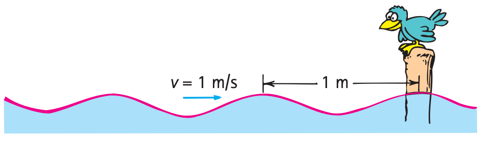

The speed of periodic wave motion is related to the frequency and wavelength of the waves. We can understand this by considering a top view of the simple case of water waves (Figure 19.8). Imagine that we fix our eyes on a stationary point on the surface of water and observe the waves passing by this point. We can measure how much time passes between the arrival of one crest and the arrival of the next one (the period) and also observe the distance between crests (the wavelength). We know that speed is defined as distance divided by time. In this case, the distance is one wavelength and the time is one period, so wave speed = wavelength/period.
Figure 19.8 A top view of water waves. Each blue circle represents a crest of the expanding ripple pattern. We call these crest lines wavefronts.
For example, if the wavelength is 1.5 m and the time between crests at a point on the surface is 0.5 s, then the wave moves 1.5 m in 0.5 s and its speed is 1.5 m divided by 0.5 s, or 3 m/s.
Since period is the inverse of frequency, the formula wave speed = wavelength/period can also be written as
Wave speed = frequency × wavelength
This relationship holds true for all kinds of waves, whether they are water waves, sound waves, or light waves.

Figure 19.9 If the wavelength is 1 m, and one wavelength per second passes the pole, then the speed of the wave is 1 m/s.